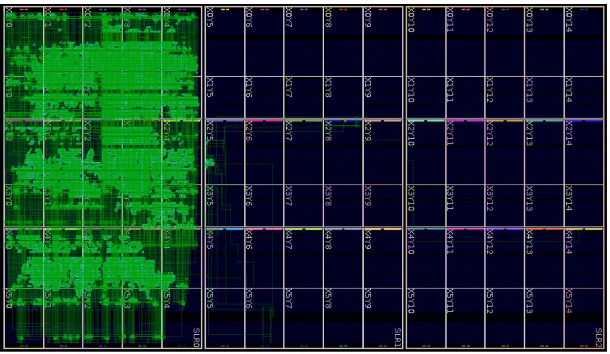

📠Why Computer Programming is an Essential Skill#
Programming allows you to automate analysis of data, control systems, and efficiently visualize information
Many of your fellow colleagues might have less programming skills than you do, which could make you a valued resource
Knowing programming allows you to customize and modify software and hardware.
Chemical and Biomolecular Engineering#
Determining protein structures and folding
Show code cell source
from IPython.display import IFrame
IFrame("https://alphafold.ebi.ac.uk/entry/A0A5E8GAP1", width=800, height=1200)
Civil and Environmental Engineering#
Forecasting air quality to help those who might be affected by air pollution make informed choices.
IFrame("https://airquality.weather.gov/#",width=800,height=800)
Electrical and Computer Engineering#
You might want to build a script to efficiently use computing resources for a task.

Engineering Leadership and Society#
Creating interactive dashboards and visualizations
Show code cell source
IFrame("https://ourworldindata.org/grapher/total-cases-covid-19?tab=map", width=800, height=800)
Materials Science and Engineering#
Discovering new Materials
Show code cell source
IFrame("https://materialsproject.org/materials/mp-1106215?chemsys=Pb-Ti-O", width=800, height=800)
Mechanical Engineering#
Robotics and control systems
Show code cell source
IFrame('https://www.youtube.com/embed/x4O8pojMF0w', width=800, height=400)
Survey to Understand your Understanding#
Please complete this brief survey before we proceed with learning more about programming with python.
Other Cool Applications AI and Machine Learning#
Show code cell source
IFrame('https://www.youtube.com/embed/UuhECwm31dM', width=800, height=400)
ChatGPT#
Prompt:#
build a game that for guessing a coin flip with a graphical output that can run in a jupyter notebook
Response:#
Creating a coin flip guessing game with graphical output in a Jupyter Notebook is a great way to combine Python programming with interactive elements. In this notebook-based version, we can use IPython display features to interact with the user and display the graphical result directly in the notebook.
Let’s create this game:
The user makes a guess.
The program flips a coin (randomly selects heads or tails).
The program creates a graphical representation of the result.
The image is displayed directly in the notebook.
Here’s the implementation in a Jupyter Notebook:
import random
import matplotlib.pyplot as plt
from IPython.display import display, clear_output
from ipywidgets import widgets
def flip_coin():
return random.choice(['Heads', 'Tails'])
def create_graphical_output(result):
# Create a simple bar chart to represent the coin flip result
fig, ax = plt.subplots()
ax.bar(result, 1, color='skyblue')
ax.set_ylim(0, 1)
ax.set_xlim(-0.5, 1.5)
ax.set_yticks([])
ax.set_xticks([0, 1])
ax.set_xticklabels(['Heads', 'Tails'])
plt.title(f"Coin Flip Result: {result}")
plt.show()
def on_button_clicked(b):
guess = dropdown.value
result = flip_coin()
output.clear_output()
with output:
if guess == result:
print(f"Correct! It was {result}.")
else:
print(f"Wrong! It was {result}.")
create_graphical_output(result)
# Widgets
dropdown = widgets.Dropdown(options=['Heads', 'Tails'], description='Guess:')
button = widgets.Button(description='Flip Coin')
output = widgets.Output()
button.on_click(on_button_clicked)
# Display widgets
display(dropdown, button, output)
Copy and paste this code into a cell in your Jupyter Notebook to run the game. This game uses IPython widgets for user input and displays the results directly in the notebook. The user selects their guess from a dropdown and clicks a button to flip the coin. The result is then displayed both as text and as a graphical bar chart.
import random
import matplotlib.pyplot as plt
from IPython.display import display, clear_output
from ipywidgets import widgets
def flip_coin():
return random.choice(['Heads', 'Tails'])
def create_graphical_output(result):
# Create a simple bar chart to represent the coin flip result
fig, ax = plt.subplots()
ax.bar(result, 1, color='skyblue')
ax.set_ylim(0, 1)
ax.set_xlim(-0.5, 1.5)
ax.set_yticks([])
ax.set_xticks([0, 1])
ax.set_xticklabels(['Heads', 'Tails'])
plt.title(f"Coin Flip Result: {result}")
plt.show()
def on_button_clicked(b):
guess = dropdown.value
result = flip_coin()
output.clear_output()
with output:
if guess == result:
print(f"Correct! It was {result}.")
else:
print(f"Wrong! It was {result}.")
create_graphical_output(result)
# Widgets
dropdown = widgets.Dropdown(options=['Heads', 'Tails'], description='Guess:')
button = widgets.Button(description='Flip Coin')
output = widgets.Output()
button.on_click(on_button_clicked)
# Display widgets
display(dropdown, button, output)